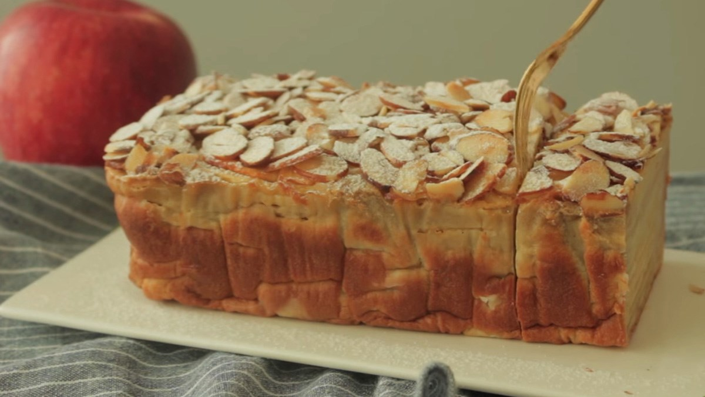

Apple Cake

Description
This apple cake is very easy to make using diced apples, applesauce, and basic pantry ingredients to make a delicious fall treat. The cake tastes delicious, stores well, and is so moist it doesn't need frosting.
This cozy apple cake is not only easy to throw together, it’ll make your whole house smell like fall.
Ingredient
-
Butter and Applesauce: This moist apple cake recipe uses a blend of butter and applesauce.
-
Eggs: Three eggs lend moisture and help bind the batter together.
-
Flour: All-purpose flour gives the apple cake structure.
-
Apples: You’ll need three cups of diced apples.
Steps
-
Gather ingredients. Preheat the oven to 350 degrees F (175 degrees C). Lightly grease and flour a 9x13-inch baking pan.
-
Beat butter, applesauce, and eggs together in a large bowl with an electric mixer until foamy.
-
Add flour, brown sugar, cinnamon, vanilla, baking powder, baking soda, and salt; mix until well combined. Stir in apples.
-
Pour batter into the prepared pan.
-
Bake in the preheated oven until a toothpick inserted into the center of cake comes out clean, 25 to 30 minutes. Cool in the pan for 10 minutes.